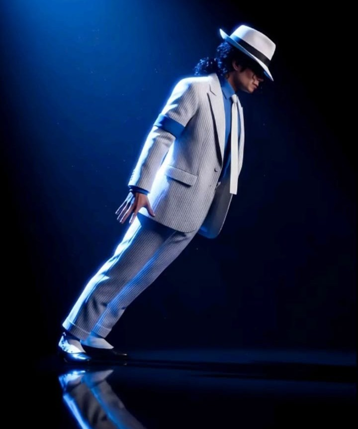

Smooth Criminal (1987)

Destaca por su atmósfera de cine negro inspirada en el misterio detectivesco. Es mundialmente famosa por su innovadora coreografía, que incluye el legendario truco de la inclinación antigravedad de 45 grados.
Datos de la canción
| FICHA TÉCNICA | ||||||||||||||||
|---|---|---|---|---|---|---|---|---|---|---|---|---|---|---|---|---|
|
El famoso paso de inclinación a 45 grados (anti-gravity lean) fue patentado por el propio Michael Jackson y su equipo; utilizaban unos zapatos especiales con una ranura en el tacón que se enganchaban a un clavo retráctil en el escenario.
Escúchala en Spotify
Preguntas Frecuentes:
Aparece en Moonwalker (1988), una película musical protagonizada por Michael Jackson.
Con zapatos especiales cuyo tacón se engancha a un clavo retráctil del escenario, un sistema que fue patentado.
Forma parte del álbum Bad, publicado en 1987.